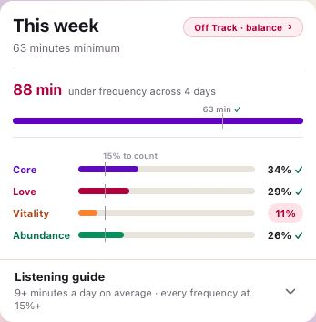
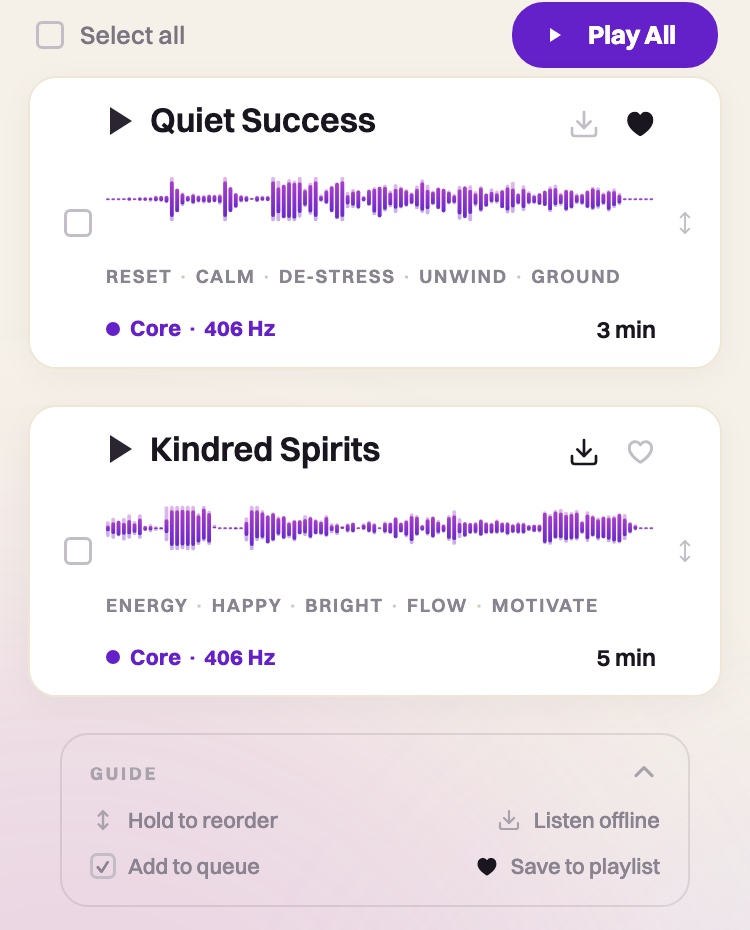
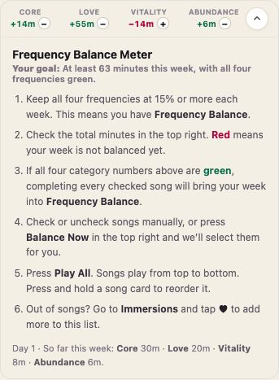
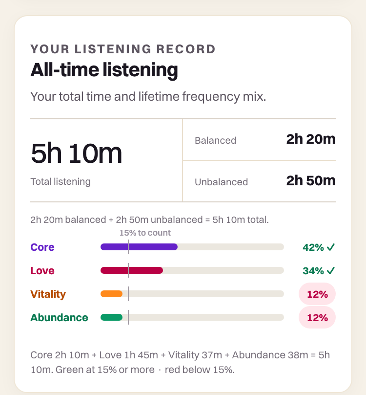
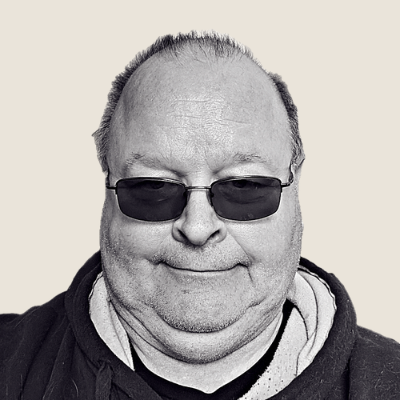

A short guide before you begin
Welcome to
Zodiac.fm
These are your four Orientation Frequencies, calculated from the exact moment you were born.
Your Personalized Frequencies
Calculated from your exact birth moment.
How to use Zodiac.fm
The practice is simple.
Listen for an average of nine minutes a day. Keep all four frequencies in the mix. This is how the people who used Zodiac as designed listened during our year-long beta.
Measured across the week, so missing a day is fine.
The rest of your listening time can go anywhere you want.

You do not need to calculate anything. The app tracks the week and shows where your next minutes will help most.
Your bands
Your frequency tells you what. Your band tells you how.
Each frequency falls into one of four bands. Your band shows the way you most naturally process that part of your life.
Open each frequency there to see how its band shapes the way you process identity, connection, energy, and opportunity.
Using the playlist
Build your listening mix.
Your music starts in Immersions and plays from Playlist. You choose the order. Zodiac keeps the balance visible.
- In Immersions, tap the heart to save a song to Playlist.
- In Playlist, check the songs you want and press Play All.
- Press and hold any song card to reorder your mix.

My Zodiac shows whether your week is balanced. Open Playlist to see exactly what is missing and select the music that corrects it.

Lifetime listening balance
The balance is weekly. The experience is cumulative.
The weekly meter keeps your current mix on track. My Zodiac keeps your lifetime listening record, so you can see the pattern building over time.

“This music tickled my soul and reminded me that there’s such a connection between vibration, the stars and the sounds that are coordinated by higher intelligence.” Debra SilvermanAstrologer to Sting, Jennifer Aniston, and more

“A lot of people around me have seen the shift in my energy since listening to my vibrations. My wife especially loves the man I am turning into since subscribing.” Ken HoffmanZodiac.fm member
What to expect
There is no correct way to notice it.
Some people notice something quickly. Many do not. Some feel the music while it plays. Others notice, weeks later, that they are responding differently.
Some notice right away.
For some, it takes weeks.
Every experience has its own timing.
Nothing is wrong if it is quiet at first. The larger changes tend to build through continued, balanced listening.

“I’m just finishing my first week and I can’t begin to explain how different I feel compared to just 5 days ago. I feel like ME.” Amber HedrickZodiac.fm member
“Without doing anything but listening, I become a different person. I shift into the version of me I actually want to be. I can tap into different frequencies based on what I need.” Joey VaillancourtVP of Marketing, BiOptimizers
The app
One last step
Add Zodiac.fm to your Home Screen.
Zodiac.fm is a web app. Add it now to get the full functionality and keep it one tap away.
Add to Home ScreenYou only need to do this once.
If you have any questions, email us at support@zodiac.fm.